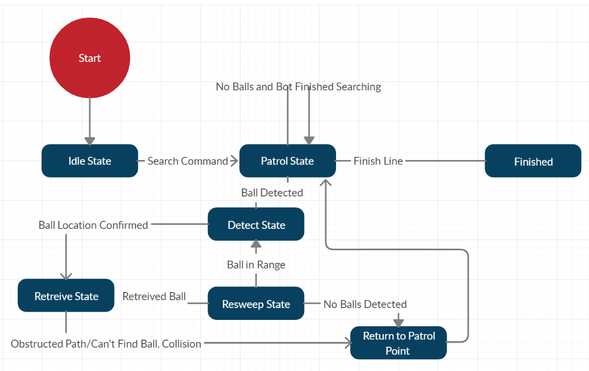

The Autonomous Vehicle Tennis Ball Collector (AVTBC) was a semester impractical
but fun group project during the Covid-19 lockdown involving Kyle Keislar,
Nolan Mirras, Igor Vdovchenko, and yours truly. The goal of this project was to
collect and return tennis balls from a standard tennis court. The project utilizes
a variety of sensory and image processing technologies including ultranosin and
smart vision sensors. The AVTBC consists of a basket and robotic arm mounted to
a small electric car for mobile ball collection and storage.
This project is summed up into 5 high level systems:
Drivetrain System
Ball Detection System
Ball Acquisition System
Microcontroller Navigation & Control System
Power System
Drivetrain System:
This system uses the osoyoo robotic car with modified battery and motors.
The design decisions that came into play into choosing this car included power,
weight, and mobility. This arduino interfacing model allowed for easier chassis
modification and high torque performance for the increased weight the basket
and tennis balls would bring.
Ball Detection System:
For this system two main sensors were used. For the long distance sensor network
a mesh of ultrasonic sensors were used as they were cheap, lightweight, and had
a detection radius of greater than 10 inches. For the shorter distances a Pixy2
Smart Vision Sensor was able to do the trick. This lightweight and compact smart
sensor is capable of tracking multiple objects, has integrated arduino capability,
and specializes in color detection.
Ball Acquisition System:
This system includes an acquisition and storage device. A robotic arm called Lewan
Soul xArm, dubbed Armen, was used to pick up the tennis balls while a simple, cheap,
and lightweight basket was screwed for the ball collection. The biggest weight for
the car would be the robotic arm so the main considerations when picking armen was
size, weight, power, and range of motion. Armen met the requirements and included a
board that supplied the power and data the servos required. Armen utilizes TTL on
the TX and RX pins and a proprietary protocol for communication between the arduino
and arm.
Microcontroller Navigation & Control System:
The navigation and control system was based on a routine state diagram given below.
When placed on the tennis court the robot will patrol in a straight line. Once the
object is detected the pixy camera will confirm if it is a tennis ball. Once in
position the arm will go through it’s retrieval subroutine and place it on the
basket. The car will then return to the previous patrol point and resume patrol.

Power System:
The power system must be able to power the car’s motors, Armen’s servos, and
arduino with the sensors. They will also need to have the capacity to continuously
operate for one court sweep. Using two LiPo high discharge 3.8V rechargeable batteries
the costs were able to stay inexpensive. However, the operational time will put a
significant drain on the 2.2 A/hr battery pack. Another battery pack is being
considered as well as adding mosfet switches with the logic control coming from the
arduino.